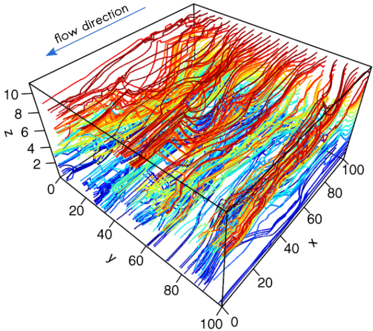

RGPR - an open-source software for GPR data processing RGPR is a free and open-source software package for ground-penetrating radar (GPR) data processing, export/import, visualisation, etc.
 Advective mixing in groundwater In three-dimensional, non-axisymetric flows the streamlines are permanently rearranged by the redistribution of the fluid within the subsurface.